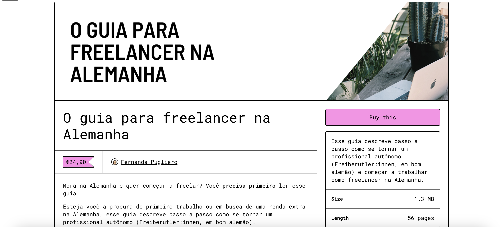

Projects
FixMyDiaper.com (2025)

A crowdsourced map and resource platform helping parents find baby-changing facilities in public spaces. Created from personal experience and designed to support parents navigating cities with their babies.
Guia para Freelancer na Alemanha (2023)
A practical, self-published guide (in Portuguese) for freelancers navigating life in Germany – covering legal setup, taxes, tools, and daily challenges. Sold over 100 copies.